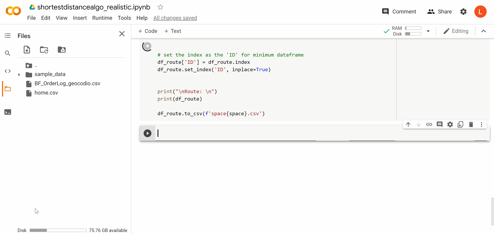

Deliveries with Python
Background
One of my best friends owns breakfastfiesta where she makes breakfast and floral arrangements for Mother's Day, Valentine's, birthdays, etc. and goes and delivers them. Identifying good delivery paths can be an issue on really busy days. Ultimately, the less time spent driving the better. This project is an attempt to minimize delivery time while still getting all deliveries done.
Process Flow
- Friend uses the Google sheet to input that day's data, like orders and addresses.
- Thanks to this geocoding macro addresses can be turned into latitude and longitude points within the sheet itself.
- The Colab notebook reads the sheet and runs the code.
What we had to deliver for Father's Day 2021 is below and serves as the main example.
Algorithm
First Approach
The GIF above was my first try at solving the problem. It calls the Bing Maps API to get the distance from her house to all the other places. It picks the closest one, marks it as visited, and then finds the closest unvisited point. That process repeats until all deliveries points are visited.
It works but it's really slow. It's also not sustainable since there's a limit to the amount of calls you can make unless you pay.
Second Approach
The idea is the same but instead of making API calls, I build a distance matrix and find the Earth-spherical distance from every point to every other point using haversine formulas.
It makes a slightly longer path compared to making API calls—around 3 miles longer. However, I think the positives outweigh the negatives: runtime is way faster (couple seconds vs couple minutes) and there's no restriction of use.
There's some assumptions that have to be made, like distance from A to B is the same as B to A; that the shortest linear distance translates to the shortest driving distance. Those are pretty rational to assume though.
I did some case testing to make sure it still works in other scenarios. This is another day—Mother's Day 2020—which had a lot more orders.
As more points show up, you can see how it can go all Chaos Theory and a minor change in the next point can have a totally different outcome in path.
Job scheduling
There's usually multiple people helping out on busy days so I figured splitting the route up for multiple drivers would be beneficial. The route gets split up by total mileage into n roughly equal parts. Every route is made to start and end at her house. This is Father's Day split up for 4 drivers:
One of the characteristics of the loops is their flexibility so it doesn't matter which way you take the loop. That is useful for delivering things that have priority i.e. a fruit tray. The idea is that the driving distances are approximately balanced enough so that by the time red finishes their round of 9, blue's done their 7, green their 6 and purple theirs in Homestead.
Next steps
I learned an insane amount from this project. My favorite part by far was providing value for my friend and her business. To get a rough idea of delivery routes, for one or more drivers, all online with no files needed, for free and in seconds, I think is pretty cool and is hopefully helpful to her. We've talked about doing some demand forecasting so she can predict future sales and know exactly how much stock to keep so that's probably coming in the future!